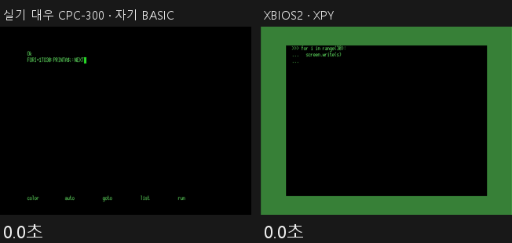

XBIOS 1.0
기존 MSX BIOS 와 무엇이 다른가
가장 큰 차이는 BASIC 대신 파이썬이 들어 있다는 점입니다.
ROM 구성, 한 칸씩
본체 ROM 앞 16KB
기존: BIOS · 입출력 진입점
교체
XBIOS입출력 진입점
본체 ROM 뒤 16KB
기존: MSX BASIC · BASIC 인터프리터
XPY 로 대체
XPY (파이썬)켜면 >>> 프롬프트
SUB-ROM 16KB (MSX2 이후)
기존: BIOS · BASIC 확장 · 그래픽 · 팔레트 · 시계
교체
XBIOS SUB-ROMSCREEN 5–8 · 팔레트 · 시계 · 레이캐스트 · 확장 칩
빈 슬롯
기존: (비어 있음)
신규
XPY 128KBBASIC 을 대신하는 파이썬, 켜면 >>>
한글 SCREEN 9
기존: 한국 기종 전용 · 해당 기종의 SUB-ROM 에 있음
속도 개선
몇 배 빠른 한글한국 기종이 아니어도
파란색은 XBIOS 로 바꾼 것, 보라색은 MSX BASIC 을 대신한 파이썬(XPY), 초록색은 한글 SCREEN 9 입니다.
다섯 가지 차이
1
BASIC 대신 파이썬 (XPY)
켜면 Ok 대신 >>> 가 뜹니다.
2.3배BASIC 대비 속도
2
어느 기종에서나 한글
한국 기종이 아니어도 SCREEN 9 한글과 두벌식 입력이 됩니다.
몇 배한글 출력 속도
3
기존 코드 없음
기존 BIOS 의 코드를 쓰지 않았습니다.
CCBY-NC-ND 4.0
4
네 세대를 한 소스에서
MSX1 · MSX2 · MSX2+ · turbo R 을 같은 코드에서 만듭니다.
4세대
5
기존에 없던 기능
FM 음원 진입점, VDP 로 그리는 원·상자·칠하기, turbo R 의 R800 전용 연산.
14.6배R800 3D 변환
나란히 보면
켜면
- 기존 BIOS
- MSX BASIC
- C-BIOS
- 축소판 BASIC
- XBIOS
- 파이썬 (XPY)
라이선스
- 기존 BIOS
- 재배포 불가
- C-BIOS
- BSD
- XBIOS
- CC BY-NC-ND 4.0
세대
- 기존 BIOS
- 기종마다 하나
- C-BIOS
- MSX1 ~ MSX2+
- XBIOS
- MSX1 ~ turbo R
한글
- 기존 BIOS
- 한국 기종 전용
- C-BIOS
- 없음
- XBIOS
- 모든 MSX2 이후
XPY — 켜면 바로 파이썬
XPY version 1.0
Python
8749 Bytes free
Ready
>>> for i in range(3):
... print(i, i * i)
0 0
1 1
2 4
>>> ▌
같은 게임을 원래 MSX BASIC 과 XPY 로 돌려 걸린 프레임 수. 짧을수록 빠르고, 계산 결과(체크섬)는 양쪽이 같습니다.
한글 — 같은 글을 몇 배 빨리

같은 한글 630바이트. 왼쪽 대우 CPC-300 원래 BIOS, 오른쪽 XBIOS + XPY (openMSX).
아직 안 되는 것
- MSX2 이후는 에뮬레이터에서만 시험했습니다.
- XPY 는 RAM 64KB 가 필요합니다.